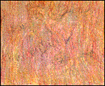
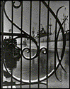
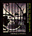
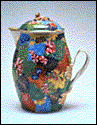
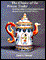
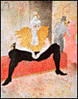
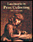
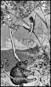
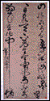

Reginald Sanders
 (c) 12k
March 6-April 20, 1997
Minnesota Gallery
This exhibition consists of kinesthetic abstraction and miniature collage works by 75 year old artist, writer, and musician Reginald Sanders. It explores the relationship between jazz and contemporary abstraction.
After the Photo-Secession: American Pictorial Photography, 1910-1955
 (c) 16k
February 8-May 4, 1997
Harrison Photography Gallery
This exhibition examines the social and artistic development of pictorial photography between the World Wars. A large publication accompanies the exhibition and is available in the Museum Shop.
 ~ Exhibition catalog ~
When Our Ship Comes In: Chinese Export Porcelain from the Hodroff Collection
 (c) 16k
February 1-June 29, 1997
Cowles Gallery
The collection of Leo and Doris Hodroff of Minneapolis is one of the finest collections of Chinese export porcelain ever assembled. These pieces were made for markets around the world and date from the end of the 16th to the middle of the 19th century. A fully-illustrated catalogue accompanies the show and is available in the Museum Shop.
 ~ Exhibition catalog ~
Landmarks in Print Collecting: Masterpieces from the British Museum
 (c) 16k
January 25-April 6, 1997
Galleries 376, 377, 378
Chosen entirely from the British Museum's holdings of prints, this exhibition is composed of 100 outstanding examples spanning the history of Western printmaking. The exhibition is accompanied by a fully illustrated catalogue, available in the Museum Shop. The exhibition is organized by the British Museum in collaboration with the Museum of Fine Arts, Houston and the Parnassus Foundation.
 ~ Exhibition catalog ~
"A Glove" and "Intermezzi": Max Klinger's Prints of Fantasy
 (c) 14k
November 8, 1996-June 29, 1997
Gallery 305
Painter, sculptor, and printmaker, the German artist Max Klinger is most revered for his extraordinary print cycles of fantastical, religious, and mythological subjects. He believed that only the graphic arts could express the extremes of fantasy and emotion, which were inappropriate to the more realistic arts of painting and sculpture. The 14 print portfolios Klinger created between 1879 and 1915 were instrumental in reviving the art of etching and graphic arts in turn-of-the-century Germany.
The Scholar's Study: Chinese Art in the Literati Tradition
 (c) 9k
Continuing
Gale Gallery
This exhibition includes between 50 and 60 works of literati art dating from the 16th through the 18th centuries drawn from the permanent collection. The show focuses on artistic themes, literature, and collecting tastes peculiar to the scholar-painters of the Ming dynasty (1368-1655). There are three categories of art included: objects from the scholar's desk used in the production of painting and calligraphy, works of art produced by literati artists, and works of art collected by literati artists.